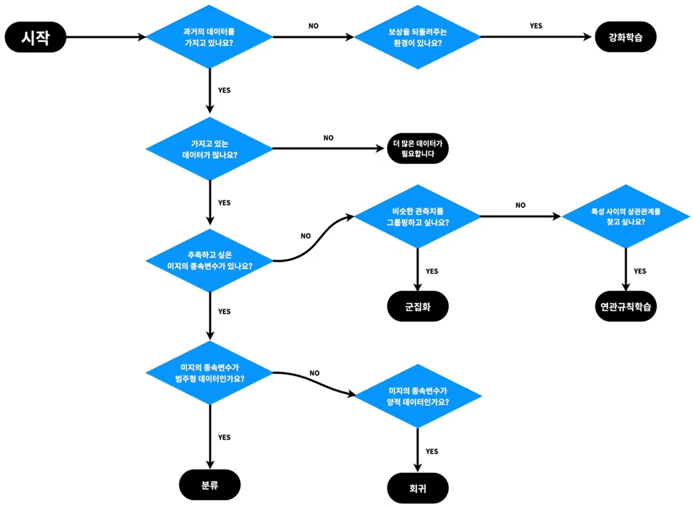

- WEB
- MACHINE LEARNIG
- BEAKJOON
MACHINE LEARNIG
Machine Learning 기계학습
[생활코딩]
Model
- 판단력
- 학습 : Model을 만드는 과정
-> 학습이 잘 되어야 좋은 모델을 만듬
-> 좋은 모델은 좋은 추측을 함
애플리케이션 : 응용
- 어떤 기능을 부품으로 해서 만든 완제품
프로그램
- 시간, 순서, 흐름
- 기계가 해야할 일을 기계가 알아들 수 있는 방식으로 순서대로 적음.(programing)
IoT(사물 인터넷)
- 인터넷으로 사물을 제어
머신러닝 애플리케이션 기획안1
※ 기술적한계는 고려하지 말 것.
데이터 산업
- 복잡한 현실에서 발견하기 어려운 통찰을 단순해진 데이터로부터 찾아내는 것을 통해 현실을 변화시키는 일
-데이터 과학
-> 데이터를 만들고 만들어진 데이터를 이용하는 일
-데이터 공학
-> 데이터를 다루는 도구를 만들고 도구를 다루는 일
표(table)
-행(row)
-열(column)
독립변수, 종송변수
- 독립변수 : 원인이 되는 열
- 종속변수 : 원인으로 인해 결과가 되는 열
- 한쪽의 값이 바뀌었을 때 다른 쪽의 값도 바뀌었다면 두 특성은 관련이 있다고 추측가능
-> 상관관계
상관관계와 인과관계 (상관관계에 인과관계가 포함됨)
-> 모든 인과관계는 상관관계임
- 독립변수는 원인이다.
- 종속변수는 결과다.
- 독립변수와 종속변수의 관계를 인과관계라고 한다.
- 인과관계는 상관관계에 포함된다.
머신러닝 애플리케이션 기획안 2
머신러닝의 분류

지도학습 (supervised learning)
- 기계를 가르침.
- 데이터로 컴퓨터를 학습시켜서 모델을 만드는 방식
비지도학습 (unsupervised learning)
- 지도학습에 포함되지 않는 방법
- 기계에 데이터에 대한 통찰력을 부여
강화학습 (reinforcement learning)
- 지도학습이 정답을 알려주는 문제집이 있는 것이라면, 강화학습은 어떻게 하는 것이 더 좋은 결과를 낼 수 있는지, 경험을 통해 더 좋은 답을 찾아감.
정리
- 지도학습 : 정답이 있는 문제를 해결
- 비지도학습 : 무언가에 대한 관찰을 통해 새로운 의미나 관계를 밝혀내는 것
- 강화학습 : 더 좋은 보상을 받기 위해서 수련하는 것.
지도학습(SL)
- 과거의 데이터로부터 학습해서 결과를 예측하는데 주로 사용
- 지도학습을 위해서는 과거의 데이터가 필요
-> 데이터를 독립변수와 종속변수로 분리해서 독립변수와 종속변수의 관계를 컴퓨터에 학습시킴 -> 이를 model이라 함
분류와 회귀
회귀 (regression)
- 가지고 있는 데이터에 독립변수, 종속변수가 있고, 종속변수가 숫자일 때 이용
분류(classification)
- 가지고 있는 데이터에 독립변수, 종속변수가 있고, 종속변수가 이름일 때
비지도 학습(unSL)
데이터의 성격을 파악하는 것이 목적
군집화(clustering)
- 비슷한 것들을 찾아서 그룹을 만드는 것
- 군집화와 분류 비교
-> 그룹을 만드는 것 : 군집화
-> 어떤 대상이 어떤 그룹에 속하는지 정함 : 분류
> 비슷한 행을 그룹핑하는 것
연관 규칙 학습(association rule learning)
- 장바구니 학습
-> 특성을 그룹핑하는 것
강화학습(reinforcement learning)
- 상태에 따라 더많은 보상을 받을 수 있는 행동을 에이전트가 할 수 있도록 하는 정책을 만드는 것이 목적.
- 환경(environment)
- 에이전트(agent)
- 상태(state)
- 보상(reward)
- 정책(policy)
- 행동(action)
머신러닝 1 - 강화학습의 사례
머신러닝 적용 지도
